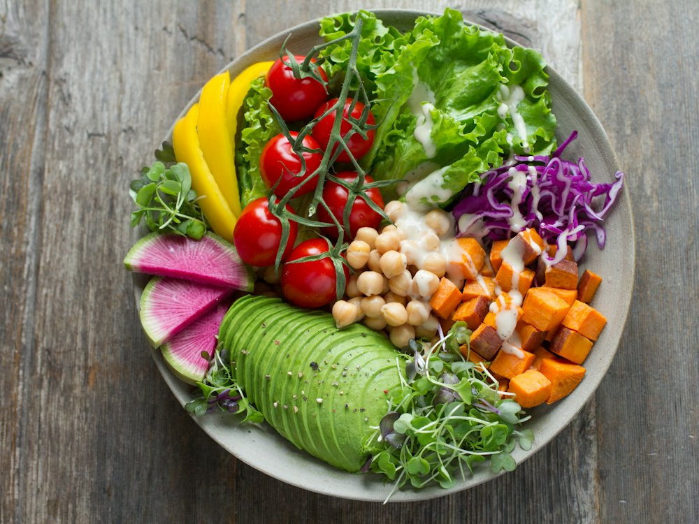

Basilic
Кафе · Разные кухни мира · Алматы
Рейтинг 2ГИС
★ 4.0
4 638 оценок
Год открытия
нет данных
в открытых источниках не нашли
Средний чек
≈2 000 ₸
оценка по типу заведения
Адрес и часы
📍 ул. Желтоксан, 115, Алматы · Алмалинский район
🕒 круглосуточно
О заведении
«Территория вкусной еды»: блюда разных кухонь без добавок.
Меню
Рядом в справочнике
Baharat · Bao sushi & noodles bar · Barakat Burger · Baursak City · Beefeater · BeerDay